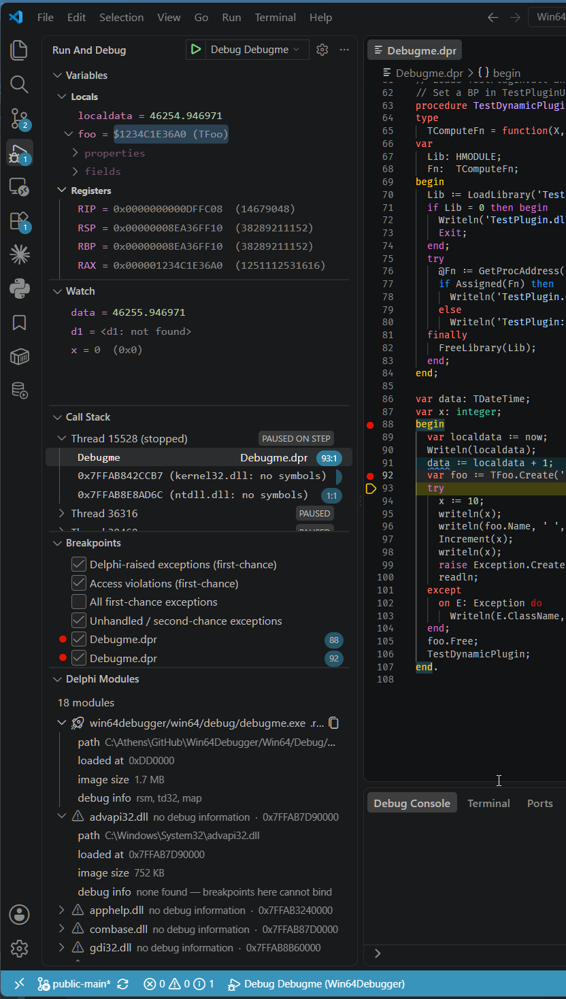
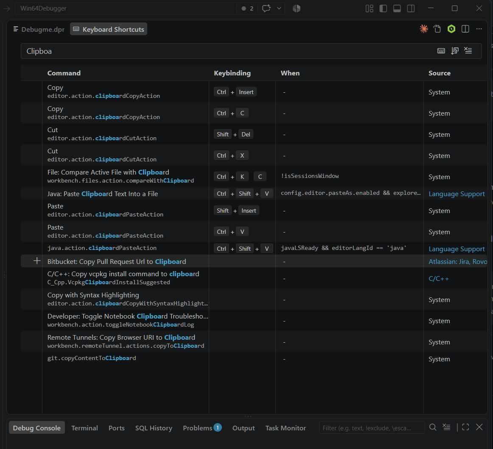

0. VS Code for Delphi developers
You have spent years in an IDE where you know where everything is without looking. This page is about getting some of that back quickly, because almost nothing here is where you expect it and two of the keys do the opposite of what your hands are about to do.
It assumes Visual Studio Code is installed and you can open a folder in it. It does not try to teach the editor — Microsoft’s own documentation does that better than we would. What follows is only the translation.
Read this one first: F5 and F9 are swapped
| Key | In Delphi | In VS Code |
|---|---|---|
F5 |
Toggle a breakpoint | Start / continue the program |
F9 |
Run the program | Toggle a breakpoint |
They are exactly exchanged. Your first instinct — F5 to mark a line — starts
the application instead, and F9 to launch it silently drops a breakpoint on
whatever line the cursor was on. This costs everyone the same confused thirty seconds, so
now you have had them here instead.
You can swap them back if you want to; see changing the keys below. Read the rest of this page before deciding.
Where the debug windows went
Delphi scatters its debug windows across the desktop and you summon them with
Ctrl+Alt-something. VS Code puts nearly all of them in a single side bar
panel: the Run and Debug view, opened with
Ctrl+Shift+D. Inside it are collapsible sections, and those sections are
your old windows.
| Delphi window | Where it is now | |
|---|---|---|
| Local Variables | Ctrl+Alt+L | VARIABLES section |
| Watches | Ctrl+Alt+W | WATCH section |
| Call Stack | Ctrl+Alt+S | CALL STACK section |
| Breakpoints | Ctrl+Alt+B | BREAKPOINTS section — which is also where the exception filters live |
| Thread Status | Ctrl+Alt+T | No separate window: threads are the top-level rows of the CALL STACK section, and expanding one shows its frames |
| Modules | Ctrl+Alt+M | Delphi Modules section — added by this extension, not part of VS Code |
| CPU / Disassembly | Ctrl+Alt+C / Ctrl+Alt+D | The Disassembly View, opened from the Call Stack’s context menu |
| Event Log | Ctrl+Alt+V | Split in two: your program’s output goes to the Debug Console, the debugger’s own messages to an Output panel channel |
| Raw values in the stack | Ctrl+Alt+R | The raw stack scan — same idea, same caveats, switched on from the Call Stack title bar |

The rest of the keys
| What you want | Delphi | VS Code |
|---|---|---|
| Run with debugging | F9 | F5 |
| Run without debugging | Ctrl+Shift+F9 | Ctrl+F5 |
| Toggle breakpoint | F5 | F9 |
| Step over | F8 | F10 |
| Step into | F7 (Trace Into) | F11 |
| Run until the routine returns | Shift+F8 | Shift+F11 |
| Stop the program | Ctrl+F2 (Program Reset) | Shift+F5 |
| Restart | — | Ctrl+Shift+F5 |
| Run to the cursor | F4 | Run to Cursor, from the editor’s right-click menu while stopped |
| Move the execution point | drag the arrow | Jump to Cursor, in that same menu — see chapter 3 |
| Evaluate / modify a value | Ctrl+F7 | Type it in the Debug Console, or edit the value in place in VARIABLES |
| Inspect a value | hover, or Debug Inspector | Hover — and if you select an expression first, the selection is what gets evaluated, as in Delphi |
Shift+F7): step into already walks to the next line that has source. And
there is no drag gesture for the execution point — VS Code does not implement one.
Changing the keys
None of this is fixed. Ctrl+K then Ctrl+S opens the Keyboard
Shortcuts editor: search for a command, click the pencil, press the combination you want.
Everything you change is written to a keybindings.json you can version and
share.
So you can put F9 back on Run and F5 back on Toggle
Breakpoint, and if you spend most of your day in Delphi that may well be the right call —
fighting your own muscle memory all day is a real cost.

Ctrl+K Ctrl+S) — type anything in the
search box to filter, including a command ID, a key combination, or just a word like
Clipboard shown here. Hover a row for the pencil icon that lets you rebind it. The
same editor filters on any of this manual’s debug commands just as well.Where things hide
Delphi puts its commands in menus. VS Code hides most of them, and knowing the four hiding places is most of what makes it usable.
- View title bars. Small icons at the top-right of a section — but only when the mouse is over that section. Edit Exception Rules and Toggle Raw Stack Scan live there, and you will never see them by staring at a stationary screen.
- Inline row icons. Some commands appear as an icon on a row when you hover it, not in its right-click menu. View Memory (Delphi) is one, so looking for it under right-click fails.
-
The Command Palette —
Ctrl+Shift+P, type a few letters of what you want. Everything this extension contributes is prefixedDelphi Debugger:, so typing that lists the lot. A handful are deliberately excluded because they only make sense on a row you clicked. - The editor’s right-click menu while stopped, which is where Run to Cursor and Jump to Cursor are.
Screenshot: a view title bar with its icons revealed by hovering, alongside a row showing an inline icon — the two hiding places that cost the most time, in one picture.
tutorial-00-view-title-bar.png)There is no project options dialog
Everything you would set in Project → Options — what to run, where the symbols
are, where the sources are — is a JSON file, .vscode/launch.json. There is
no dialog, and hand-writing it for a real Delphi project means transcribing a couple of
hundred search paths.
Do not do that. The Edit in VS Code IDE plugin generates the whole thing from the project you already have open in Delphi. Chapter 1 covers what ends up in it.
Settings a Delphi codebase needs
VS Code’s defaults assume a codebase that is not yours. Five settings make it behave around Delphi sources, and the first one is not optional.
Encoding detection — the one that looks like corruption
"files.autoGuessEncoding": trueVS Code opens every file as UTF-8. Plenty of Delphi code predates that and is stored in a local ANSI code page, so the moment you open a unit with accented characters in it you get mojibake — and if you save, you write the damage to disk. Turning detection on fixes it. This is the setting that makes people conclude VS Code “does not work with Delphi” and give up in the first ten minutes.
Hide the build output
"files.exclude": {
"**/Win32/Debug": true,
"**/Win64/Debug": true,
"**/__history": true,
"**/__recovery": true,
"**/*.res": true
}
Without this, the file tree and every search are full of build output and IDE backups.
__history is the worst of them: it holds old copies of your own units, so a
search for a routine name returns the current version and nine previous ones with no
indication of which is which.
Stop the editor guessing indentation
"editor.detectIndentation": falseBy default VS Code infers tabs-versus-spaces per file from what it finds. On a codebase with decades of mixed history that means the setting changes as you move between units, and your edits inherit whatever the file happened to have.
Let folding work on big units
"editor.foldingMaximumRegions": 8000Folding gives up past a fixed number of regions, and a large Delphi unit blows through the default. It fails quietly — folding simply stops working, with no message.
Teach it that begin/end is a bracket pair
VS Code understands {} and (). It has no idea that
begin and end belong together, so bracket matching and folding
do nothing useful in Pascal until you tell it — the same for
case/end, repeat/until,
try/end.
vscode-workspace-defaults.json next to your
project, together with the recommendation to install DelphiLSP. Put that file under
version control and your colleagues get the same editor behaviour on checkout, which is
the point of it existing.
One more, from the File menu
Turn on Auto Save. You will be switching between Delphi and VS Code constantly, and this way the file on disk is already current when you switch back. Note the asymmetry: Delphi does not auto-save when you leave it, unless you left through the plugin’s own Edit in Visual Studio Code command.
Next
That is the orientation. Chapter 1 is about getting your project compiled so the debugger has something to read — which is the other thing that stops people on day one, and has nothing to do with VS Code.